TASK TO DESIGN THE PCB
- Redraw the echo hello-world board and:
- Add (at least) a button and LED (with current-limiting resistor)
- Check the design rules, and make it
Redraw the echo hellow-world board
So lets Start ,this week we have to design PCB Borad that Based On Micro Controler, So for the Design we are fimilare with EAGLE (Easily Applicable Graphical Layout Editor). Becasue we can easily redraw the required cirucit in this software as well as pcb board can be easy generated in it.
EAGLE can be downloaded from HERE
After the installation of the EAGLE the next target is to get fimilare with. Here is the very easy and usefull tutorial from which we can learn how to draw the circuit diagram in this software. So i used to design the with the helf of the This Tutoural HERE
The Next very important thing is to include fab library to the eagle. It is really important because the component that we use to draw any circuit must be avalible in our fablab. In this regard fab library help us to give easy path to include component with proper pcb layout.
Here is the eagle library to download
first of all Install the latest Eagle Software(9.5.2 version) and Sign Up at the Autodesk page and change the Seeting for off line
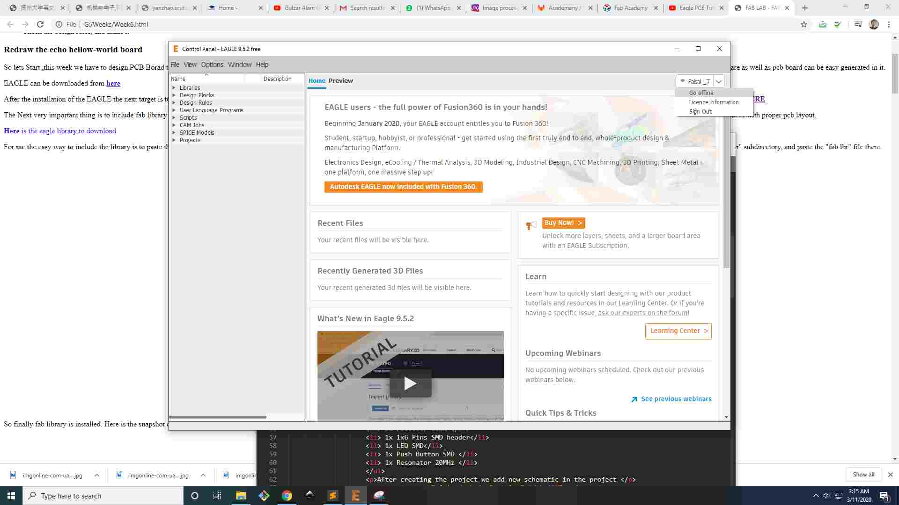
Now Open the file and go to the new and than Schematic for the new file:
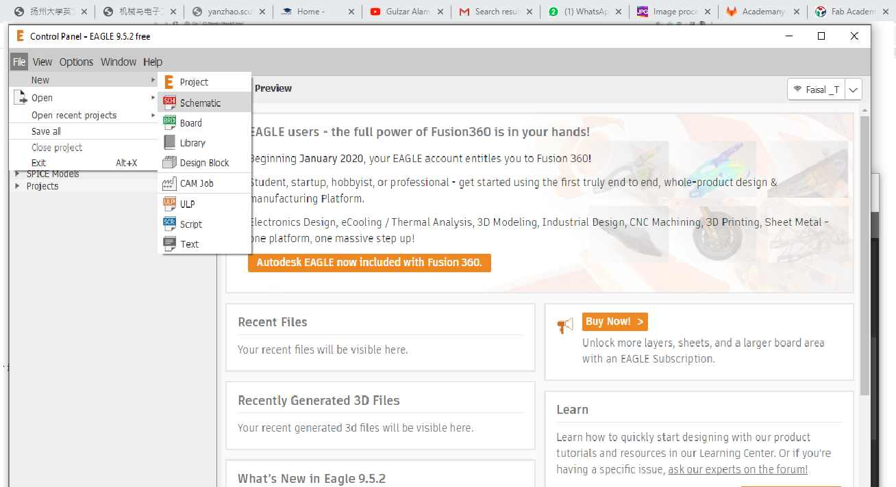
Now You will find this kind of Window:

now its time to uplaod the Library first we goes to Select the Add part and click it,then open the library manger,than goes to Browser and Select the all Downloaded libraries and after press the use icon .

After This we Need to upload the ATTINY-44 Libraray in Eagle Software: Here
So finally fab library is installed. Here is the snapshot on the library from here we can add components to redraw our hello-world board.So first add the Mirco controoler IC That ATTINY-44 in Eagle.
Instrcutions for the Eagle CAD
After exporting PNG our PCB layout is ready, Now we need to create its Board that will be used for milling machine to cut the required pcb from copper board. We can do this in Adobe Photoshop.
To create border image in photo shop we need to follow the following steps.
- Open image
- Create a new layer
- Increase canvas size by one mm of new layer and fill back colour in it.
- copy the layer of original image.
- Now hide the original layer an save the image.

Now we can Add the resonator

this is the final Circuit Board of Attiny-44
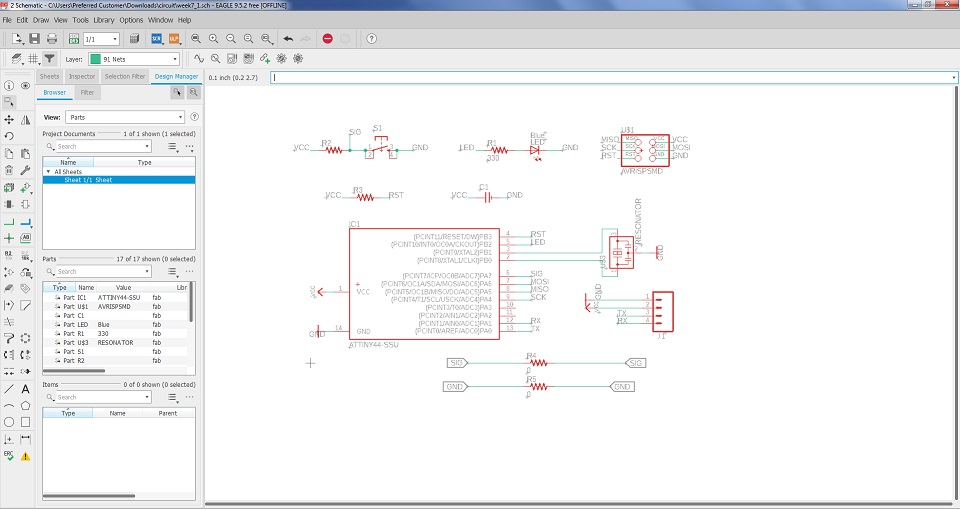
Now this layout is used for the plaing and routing Placing the PCB Design

After above the process Now Placing the Components :Final View of Board

This The routing of my Design the PCB,When the schematic diagram is complete we need to check the ERC (Electrical rule check), we can do this by using erc command. In my case I got zero errors and 5 warnings. All warnings are due to unused pins in the circuit. This step is shown here in the image given below

Now going to generate PNG file for the Milling
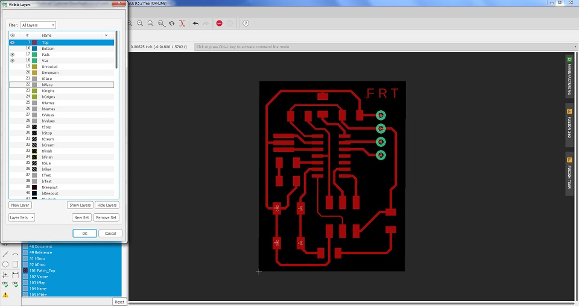
Now I am Going to Generate the Black PNG Image for the Milling
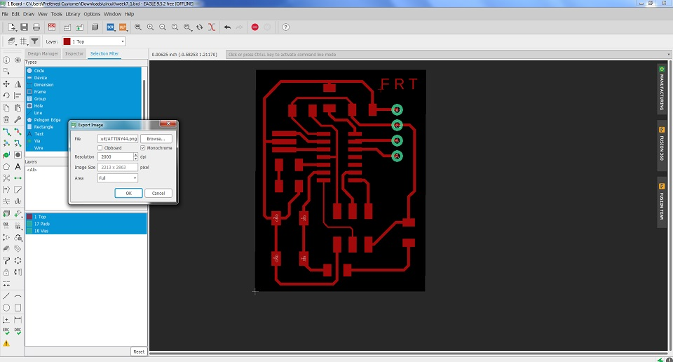
Now from the Image I have to generate the outerline and drill by Images in paint
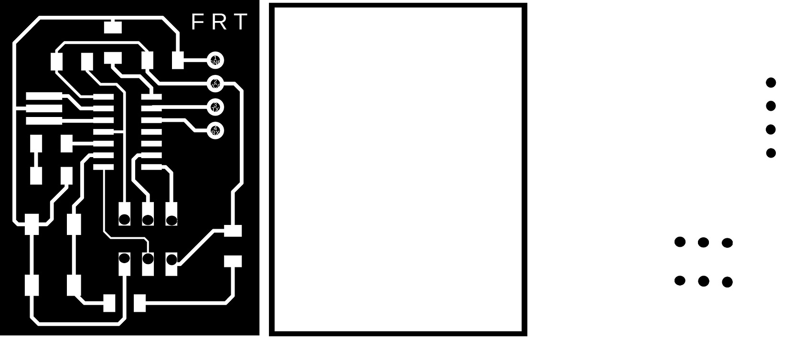
Now Generate the Traces by using MODS

Now Again using the Mod to Generate the Drill and Outer

Now Again using the Mod to Generate the Drill and Outer

Final rml results
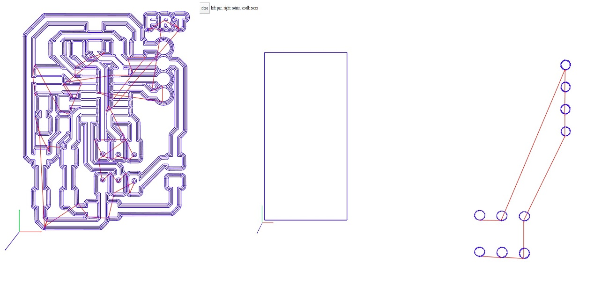
this the Traces generate by using Mods.cba.mit
Here is the list of component that we need Solder the PCB
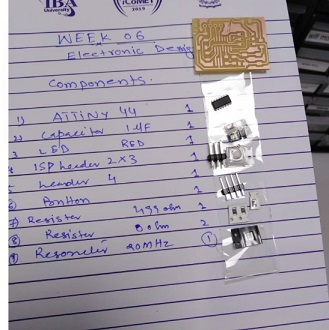
First thing is to make PCB board as smaller as you can but take care of traces and component, they must not be to much close.
Second, Move the components at your desired place but make sure that you will be able to find the trace to make the connection, otherwise we need to move to another layer. Which will become difficult and expansive to implement.
Third, wire width. It is also important, try to make wider trackes for low electrical resistance but the board size will not allow us to do so. So we need to make a trade-off. Make the wire wider where possible and reduce otherwise.
After taking into account all the above consideration, finally I have complete my PCB layout ready of hello-world board. now going to miil ythe board by using SRM20, I ahve mentioned week electronics Production about SRM machine.
Steps Are given below
First Power on the SRM-20 machine
Check the PCB Board Size and Bit Dstails
Now Open the SRM -20 Machine Software and set the Origions (x,y,z )at (0,0,0)
Now Output the Traces file for the milling by using the rml code gernated by mods.
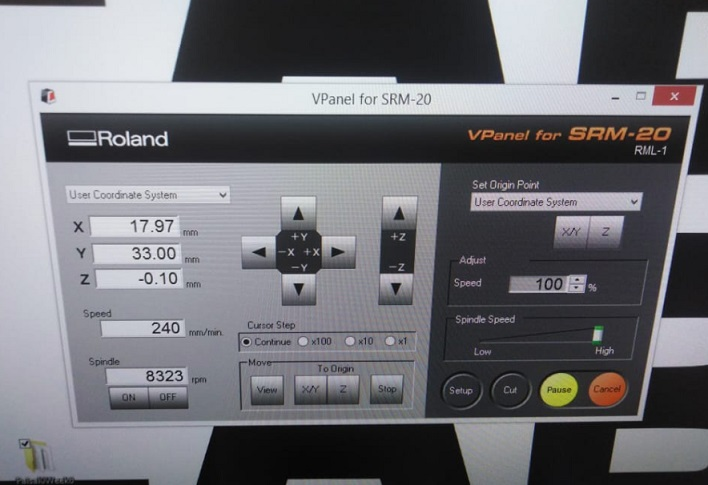
While Milling the Board
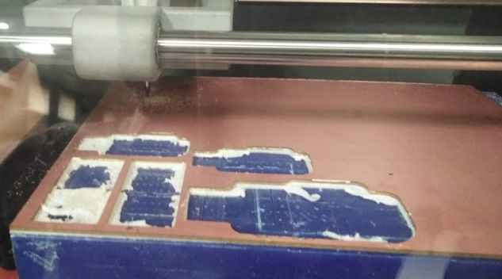
After the Trace Complete So Board is Looking:
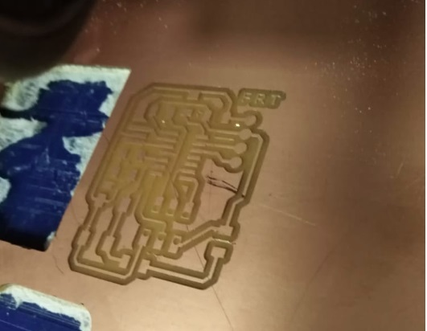
this the PCB Milling Board after the Drilling and Outerline so looks Nice:
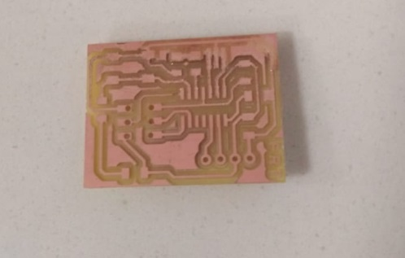
After the Soldering
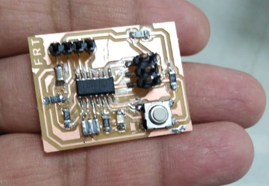
Now Its Turn to Programe the Board and Check the results
First Microcontroller Board is Connected withe ISP-44 Programer for the Burn the Loader
Further more Installing the drivers and test the ISP Programmer:.
So we need to install the drivers for the programmer. We can download from this site HERE
this the ISP-44 programmer and Mirco controler Board Connections
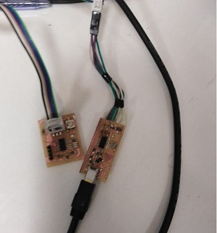
Now Downlaod the Ardiuno Ide and Install the in the Computer and also installed the ISP Programer drivers
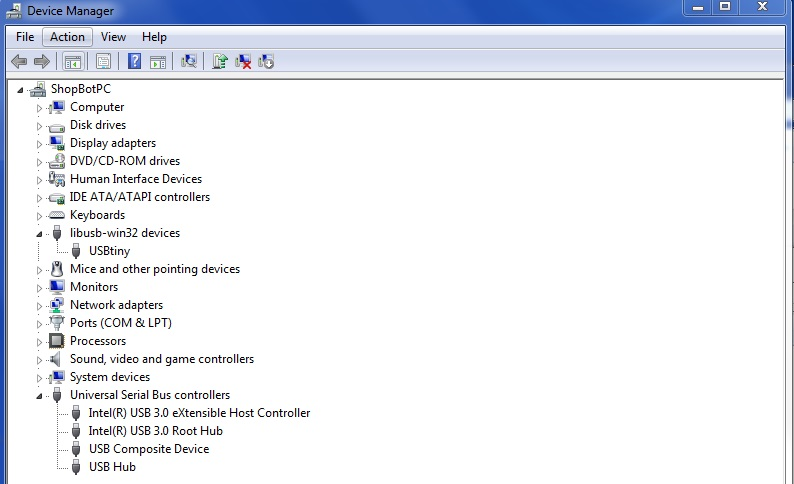
Now open the Arduino ID and set the Preferences :
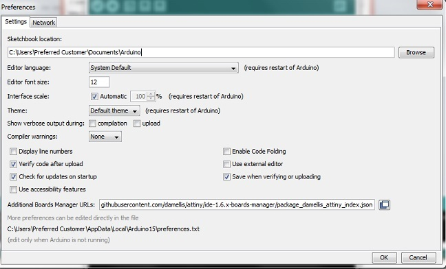
Now go to the Board Manager and update the Attiny Borad
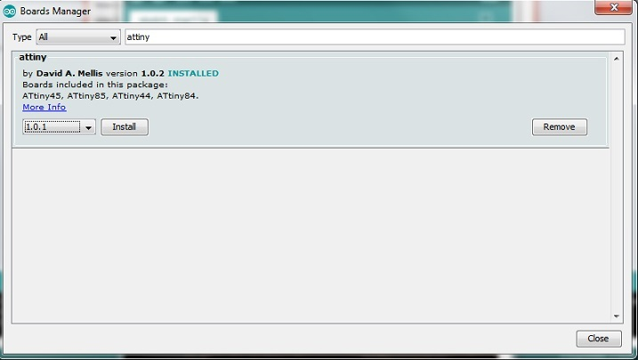
Now agian go to the Board Manager and select the Board attiny44/85/25 after set the Prcossor Attiny-44 and in last Select the 20MHZ clock processor
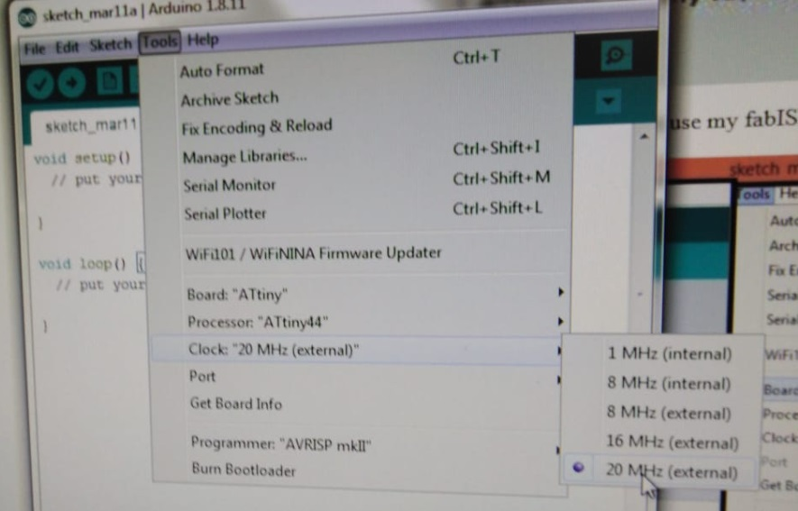
Setteing of the Processor
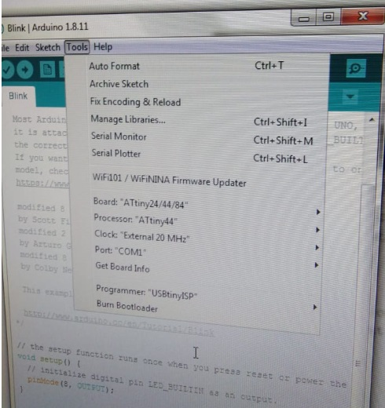
Now it stime to burn the Boat loader

Now Upload the Program and check that Processor and Board is working:
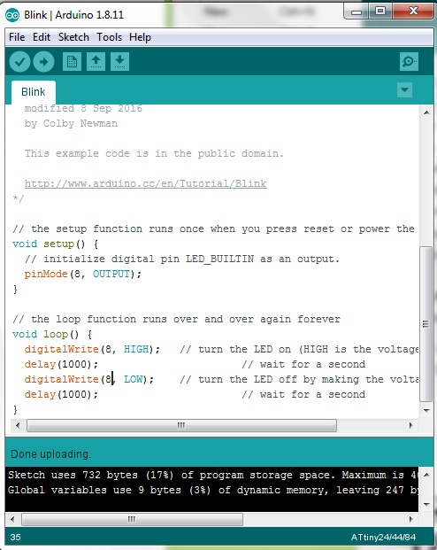
Final Results of the Attiny Mirco Controler LED is Blinking
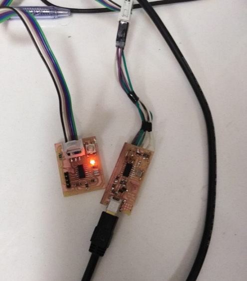
Group Assignments
Digital Meter testing
Auto-ranging or manual-ranging Here the choice is a simple one: go for an auto-ranging digital multimeter since DMMs with auto-ranging cost about the same as DMMs with manual-ranging and the former is a lot less of a hassle to use and is more efficient when it comes to making measurements.
The auto-ranging feature should also have a manual control override button so that you can fix readings to a specific range if the need arises.
Finally, auto-ranging speeds need to be relatively quick so as not to excessively annoy the user - any multimeter that takes more than a second to auto-range is taking too long and should be avoided.
Parameter ranges
1 Voltage:
- The digital multimeter should be able to measure both AC voltage and DC voltage.
- For both AC and DC voltage, the digital multimeter should be capable of measuring millivolts (eg. 200mV) up to approximately 1000V.
2 Resistance:
- For electronics work, the digital multimeter should be capable of measuring from about 200Ω up to a minimum of 20MΩ, and higher if possible.
3 Current:
- For both AC and DC ranges: the digital multimeter should be able to measure in both the microAmp (µA) range as well as in the milliAmp (mA) and Amp (A) ranges.
- The amperage measurement upper limit of the digital multimeter should be at least 10-20A.
- Less expensive multimeters will often have a combined ‘VΩmA’ terminal (image below left) - this is not recommended. For safety reasons, it is preferred that the current (µA / mA / A) terminals are separate from the voltage and resistance (VΩ) terminal (image below right). Multimeter with combined µA/mA and VΩ terminals Multimeter with separate mA and VΩ terminals.
Input impedance
The digital multimeter should have at least 10MΩ input impedance to prevent it from significantly changing the voltage measured across high resistance components.
Safety fuses
The high amperage (eg.10A) range MUST be fused otherwise this can present a serious safety hazard! Good meters will also have the milliAmp (mA) range fused as well.
The fuses used in the meter should be of the High Rupture Capacity (HRC)-type to reduce potential damage to the meter and to the operator in the unfortunate event that a fuse blows.
NB: Digital multimeters without a fuse or with sub-standard fuses should only be used in simple battery powered circuits (eg. those powered off an AA or 9V battery). They should never be used on mains electricity nor other high voltage circuits.
Diode measuring function
Almost all meters are fitted with a diode measuring function.
However, not all diode measuring functions are created equal as they can vary in the maximum test voltage that they will measure.
In general, a digital multimeter with a maximum test voltage of 4V is good enough for electronics work but an even higher upper limit for the test voltage is always preferred.
Continuity function
The Continuity function is used a lot in electronics.
First of all, there are some cheaper digital multimeters that produce ‘scratchy’ sounds even when probes are in full contact - this is not ideal!
In addition, there are two main types of continuity function that are common in digital multimeters - They can either have a:
1 Slow latching time: this leads to a slight delay in the beep when a continuous circuit is detected. In general, one should avoid this type of digital multimeter as it is not only annoying but can also prevent you from doing certain useful measuring techniques such as quickly swiping across the individual legs of an integrated circuit while checking continuity.
2 Fast latching time: this means that a beep is sounded almost instantaneously upon touching of the probes to a continuous circuit. This is the type of continuity function that one wants in their digital multimeters.
Battery and fuse access
Better digital multimeters will provide easy access (usually a bespoke door) to the battery that powers it, as well as the fuses that protect it.
Long battery life
Some (usually brand name and more expensive) digital multimeters (DMMs) have been designed to use battery power more efficiently. In general, DMMs fall into the following broad categories with respect to battery life:
- Best high-end DMMs: 1000 hr
- Good DMMs: 300 - 500 hr
- Poor DMMs: 100 hr or less
Electronics hobbyists should be aiming for a DMM that falls into the 300 - 500 hr battery life range.
Input jacks
In general, digital multimeters have one of two types of input jack:
1. A metal jacket with a split : these tend to wear out more quickly (although some higher quality meters use this type but are specifically designed to be hard-wearing and long-lasting)
2. A solid metal jacket: these tend to be on higher-end digital multimeters as they are more robust and longer lasting.
In the interests of safety, the input jacks on digital multimeters should also be of the shrouded type so that you cannot accidentally touch the metal contact (in addition, the probes’ banana plugs should also be shrouded).
Capacitance measuring function
In general, the lower the capacitance measuring range of the digital multimeter (DMM), the better it is for electronics work:
- Less expensive DMMs will only be able to measure capacitance down to the hundreds of microFarads (µF).
- Medium-range DMMs will normally be able to measure down to a couple of nanoFarads (nF).
- High-end DMMs will be able to measure capacitance in the picoFarads (pF) range.
One thing to remember is that measuring capacitance using any digital multimeter is not particularly accurate and one should expect that a good meter will be only ~ 1-2% accurate.
In addition, some meters have separate terminals for testing capacitors. This is fine for low voltage capacitors, however, this presents a safety hazard when measuring high voltage capacitors and as a consequence higher-end DMMs will never have separate capacitor testing terminals.
Relative measurement feature
This feature is found on some digital multimeters and is useful in that it allows the meter to compensate for the internal resistance of the probes themselves (and their wires) which might skew readings slightly. It can also be used to measure a change in the voltage from a reference value.
Min-max button
This allows the operator to set the digital multimeter so that it records the minimum and maximum values that are observed during a measurement.
Hold function
This feature freezes the readings on the meter so that the user does not have to constantly see the display screen, and holds the reading even after the probes are removed. There are 2 types of Hold function that are available on today’s consumer digital multimeters:
1. Auto-hold which is found in the higher-end digital multimeters, and automatically freezes the reading when the measurement has been made usually at the same time as sounding a beep. This is the (much) preferred option!.
2. Manual-hold which is found on less expensive multimeters, which requires the operator to push a manual hold button to freeze the reading when taking a measurement. This is often difficult to operate since the operator’s hands are usually occupied with holding the probes during a measurement, making it hard to press the hold button!.
Temperature measurement
This feature is often found on digital multimeters and usually comes with a separate thermocouple probe.
Clear display with big digits
This can make taking readings much easier and the display can also be seen from far if necessary.
Evenly-lit backlight
This allows for use of the digital multimeter in low-light conditions.
CAT III-rating
Digital multimeters should be CAT III-rated as it can protect the meter (and the operator) from high energy circuits like mains electricity.
Less expensive digital multimeters will often be labelled with a ‘CAT II-rating’. However, the CAT II-rating on these cheaper multimeters can often not be trusted since less scrupulous manufacturers will often use the label irrespective of whether the devices are truly CAT II-rated or not.
In addition, the probes themselves should also be rated for CAT III. They should also have finger guards to protect the user from accidentally touching any bare metal.
Accuracy
DC voltage (VDC) is the primary parameter to check when looking at the accuracy of a digital multimeter. For the average electronics user, ±0.5% accuracy on a 2000 count multimeter is good even for electronics professionals. For higher count meters, the accuracy should increase correspondingly (see the 'Counts' section below).
Resistance (Ω) is the second parameter to look at, and its accuracy should be close to the accuracy of the DC voltage.
Current (µA / mA / A) measurement with high accuracy is hard to get in a digital multimeter. However, as a general rule, a current accuracy of ±1-1.5% is considered too high and suggests that the digital multimeter is not good for electronics work.
Counts
When it comes to counts, the more counts there are on a digital multimeter, the better the meter, however this should not come at the expense of accuracy which can be checked using the basic formula below. In general, one can expect that a good multimeter will have at least 4000 counts (which according the the table below should have at least a DC voltage accuracy of ±0.25%).
True RMS and AC bandwidth
Good professional multimeters (usually labelled with 'True RMS') will actually measure the alternating current (AC) sine wave instead of just assuming it to be perfectly sinusoidal providing a more accurate measurement of AC current and AC voltage.
AC bandwidth is given in Hertz (Hz) since AC is a sine wave. In general, the higher the frequency range, the better:
- top-notch digital multimeters will have a maximum AC bandwidth of approximately 100 KHz.
- lesser digital multimeters will have a maximum AC bandwidth of 1 KHz - 0.5 KHz.
However, AC bandwidth is less critical for the regular everyday-use digital multimeter.
Display updating speed
This refers to how often the display is updated when performing a measurement. Obviously the faster the updating, the more closely it will represent the parameter being measured especially if it is changing rapidly. In general:
- Higher-end digital multimeter displays will update around 4 times a second.
- Less expensive consumer digital multimeters will update the display about 2 times a second.
- For comparison, top-notch professional (and expensive!) Agilent digital multimeters will update the display 8 - 15 times a second.
Low-pass filter
Digital multimeters with a low-pass filter can be useful when working on motor drives and other noisy circuits as they will filter out a lot of the high frequency noise that is generated within such circuits. However, for a regular everyday-use meter, this feature is not essential.
Digital Meter Which we Use in This Week
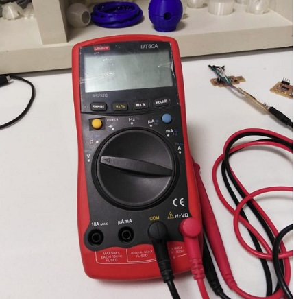
Check the Meter , that is working or Not so its Working
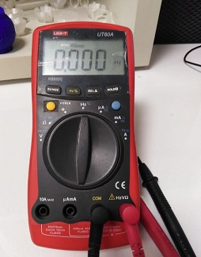
Now check the resistnace across the LED in design the Board
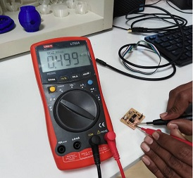
Now I want check the Value of capacitor:Wher its is Known as A capacitor is a device that stores electrical energy in an electric field. It is a passive electronic component with two terminals. The effect of a capacitor is known as capacitance.
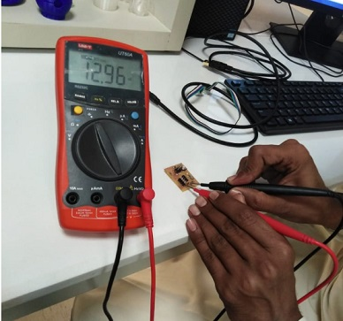
Connection Conectivity
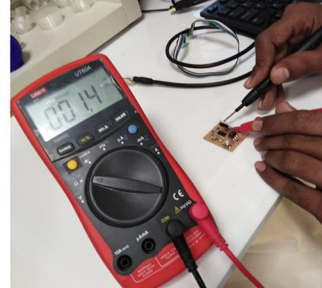
volage Across USB that 2.2v or 3.3v
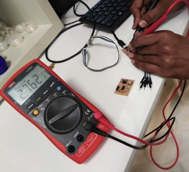
Final Volage arcoss the Attiny- 44 That is 5v
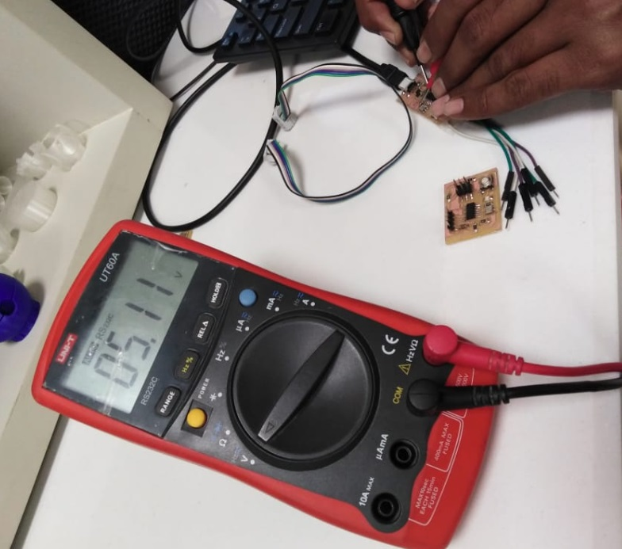
Conculsion
This week was intertesting and Learning week for the Electronics Designed, I have used the Eagle CAD Software ,embedded systems design , also used the C++ for the Programing.Finally i have done the Good Job regarding the equipments testing and other Electronics Lab use.